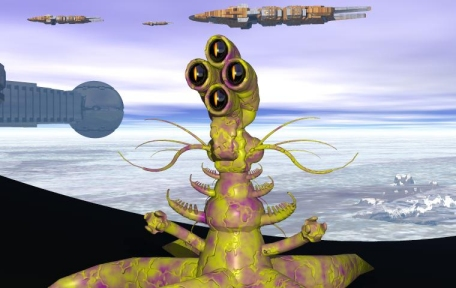

THE SORVU Introduction and Physical DescriptionThe Sorvu are a nonsymmetrical amphibious race native to Ro III, a very lush planet located on the opposite end of the Inner Suns from the Grune homeworld. The Sorvu combine aspects of both marine and reptile life. Their skeletons are cartilaginous in nature, and quite malleable, allowing the Sorvu to assume a number of postures and forms impossible for other vertebrates such as the Grune to match. In their most common posture, the Sorvu rest on a series of large radial pods or tentacles (similar to a starfishís), and the trunk of their body (which contains the majority of their internal organs) rises upwards from the center. The Sorvu possess two three-fingered prehensile tentacles at the lower part of their torso which are used for manipulation. They feed using a feeding pseudopod which extrudes from the top of their torso and can be extended and maneuvered in a 360 degree radius around their body. Their coloration varies widely depending on the moisture in the air surrounding them, and the degree of sunlight in the area they grew up in. Hue and intensity of their coloration also varies with the Sorvu's mood, darkening for passionate emotions and lightening when they are in states of calm. As the Sorvu are moody creatures, their coloration changes often. Senses and DietThe Sorvu have four-lobed brains which are protected by dense cartilage at the tops of their trunks and rest behind their primary sensory apparatus: four large eyes which provide them with a visual spectrum ranging deep into the ultraviolet and infrared. Amidst their eyestems is an air bladder and membrane. This organ, which initially evolved (and is still used) for maneuvering and propulsion underwater, has further evolved into a speech apparatus as well as a hearing aperture, although it can still be used for propulsion. The Sorvu also possess a secondary sensory structure in the upper half of their torso consisting of several antennae-like appendages which provide them with a sense of smell as well as a means of detecting fluctuations in electrical fields and vibrations in the air. Sorvu stand up to 4m tall when in their most common posture, which translates into a 6m length when their radial, base tentacles stream out behind them while in water. The Sorvu are an omnivorous race, consuming both plant and animal life using their feeding pseudopod, which can extend to lengths up to 1m longer than the Sorvuís body itself. The extremely mobile nature of its cartilaginous body allows a Sorvu to pivot its sensory apparatus as well as its feeding pseudopod throughout the entire 720 degrees surrounding its body when necessary. ReproductionThe Sorvu have two sexes, their females retaining eggs inside the body until fertilization occurs during mating with the male. Gestation takes four months, after which the female gives birth to between one and five immature Sorvu in "tadpole" form which mature into adult Sorvu over the following six years. Family units are extended, with several generations living together and sharing the responsibility for raising the children. Sorvu live for between thirty and sixty years total. Culture and ArtSorvu culture is quite rich and interesting. Their amphibious nature has led to forms of art that range from underwater symphonies using instruments which take advantage of the superior sound quality in water, to intricate architectural styles that blend skyscrapers with deep-sea structures in the same city. Sorvu cities are incredibly beautiful to behold; usually coastal, they have main boulevards which extend to deep within the sea as well as along canyonesque areas with skyscrapers on either side. The Sorvu also produce beautiful paintings and other visually pleasing art which are breathtaking even to those who cannot perceive the extra layers of color the Sorvu use to accentuate their work in the infrared and ultraviolet ranges. The Sorvu are also avid playwrights and actors, and have a rich theatrical tradition in their cities. The Sorvu find other racesí art forms interesting, and there are several Sorvu art collectors in the galaxy. Religiously, the Sorvu have a number of different faiths amongst their civilization, and are remarkably tolerant of new faiths, to the extent where some Sorvu have become adherents of religions of both their subject races as well as those of the other ruling races of the Empire. Society and HistoryThe Sorvu evolved on their lush planet amidst two intelligent mammalian species. Initially, the Sorvu were subjugated by the warlike races which dominated Ro III, and spent millennia as laborers and artists while the mammalian creatures which ruled the planet fought with one another. When the two species suffered from an epidemic which all but wiped them out, the Sorvu inherited a highly developed planet along with the knowledge to turn the technology developed by their former masters to their own uses. The Sorvu had been responsible for most of the agriculture and labor on the planet, and turned their collective efforts towards bending the weapons and technologies of war into tools to reduce their own labor requirements – truly beating swords into plowshares. Their work led them to many forms of food production unequaled by the other ruling races of the galaxy, ranging from aquaculture and hydroponics all the way to space-borne satellites used to cultivate crops using solar radiation as a primary energy source. They developed eliminated most diseases affecting crops and animals as well. The Sorvu inherited interplanetary space travel technology from their former masters and, as they had done with all the other technology they inherited, refined and improved on it until they found themselves becoming interstellar explorers and travelers. They colonized several systems, their superior agricultural abilities and rapid reproduction allowing them to exponentially increase their populations. When encountering other races, the Sorvu preferred diplomacy to conflict. Their extremely diplomatic nature and advanced culture led to several races willingly placing themselves under Sorvu governance, but even Sorvu "subject races" enjoy a high degree of freedom and participation in their government. PsychologyPsychologically, individual Sorvu have variations to a wider degree than most other races. Common racial traits include a peaceful demeanor, an immensely strong work ethic, curiosity, and an outgoing nature. Sorvu are highly tolerant of slurs and insults by other races, and are confident but not arrogant regarding their own cultural superiority; while they do not look down on other races overtly, they tend to share the opinion that all beings would be able to get along given enough time to develop. This is not to say that the Sorvu are complete pacifists. Their long time under the rule of two warlike races has given them more than enough skill and intelligence to fight a few wars of their own. Though the Sorvu are not terribly aggressive, they can certainly defend themselves when required. Relations with Other RacesIYALI: (Allied) As the first race that the Sorvu encountered, the Iyali share a closer relationship to the Sorvu than any other. The richness of Iyali technology, as well as the fact that the Sorvu are the only other major race that is entirely comfortable living in the Iyali's aquatic environment without some form of protective equipment, lend themselves to a special bond between the two races. Sorvu aquaculture has led to new and exciting developments in Iyali cuisine, and their strong work ethic has allowed the Iyali to expand their architecture and civilization with laborers and ideas which the Iyali lack. In return, the Sorvu enjoy the benefits of Iyali technology which enhances their own technological achievements as well as allowing them to follow new cultural pursuits opened by different mediums and tools. THRILE: (Rival) The Sorvu's primary rival, the Thrile, present both an enigma and something of a challenge to the Sorvu. The plant-based Thrile share little in the way of common interests with the Sorvu, their highly alien thought processes and society making integration between the races difficult. Also, as one of the mammalian races which once dominated the Sorvu were dependant on psionics to maintain their rule, the Sorvu distrust the Thrile greatly. The Sorvu maintain highly shielded minds, using enhanced foodstuffs when in contact with the Thrile to shield out almost anything except basic conversations, a situation which highly annoys the Thrile as it makes communication difficult by their standards. The two races have had sporadic military conflict with one another in the past, but there have been few conclusive engagements and none since the Pax Imperium. GRUNE: (Neutral) The Sorvu and the Grune maintain a cordially neutral relationship. While the Sorvu are aware of the Grune's militaristic ways and the perception that the Grune have that the Sorvu are weak, by the same token, the Sorvu see the Grune as needlessly primitive (but useful) beings who will eventually evolve to a more peaceful lifestyle. The two races agree to disagree, in other words, and maintain well-established trade routes with one another; the Grune's military has proven useful to the Sorvu, and of course every race loves the labor production and the foodstuffs which the Sorvu have to offer. The Grune especially enjoy this, as the more work that can get done by others, the more time they have to fight. |